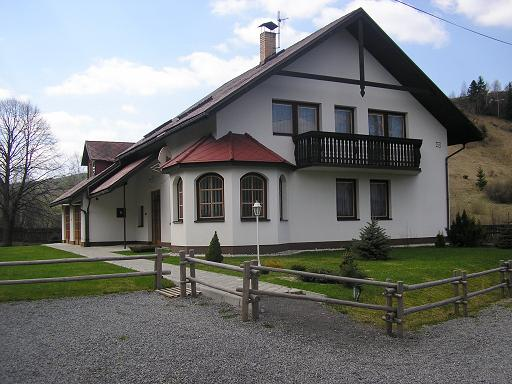

Úvod Ubytovanie Turistika Lyžovanie Kontakt



Penzión sa nachádza v malebnom prostredí dedinky Zuberec, ktorá sa nachádza pod upätím masívu Západných Tatier. Zuberec má veľmi rozvynutý cestovný ruch. Penzión má výhodnu polohu najmä v zime, čo sa týka lyžiarskych vlekov, ktoré su od vleku vzdialené okolo 200m.